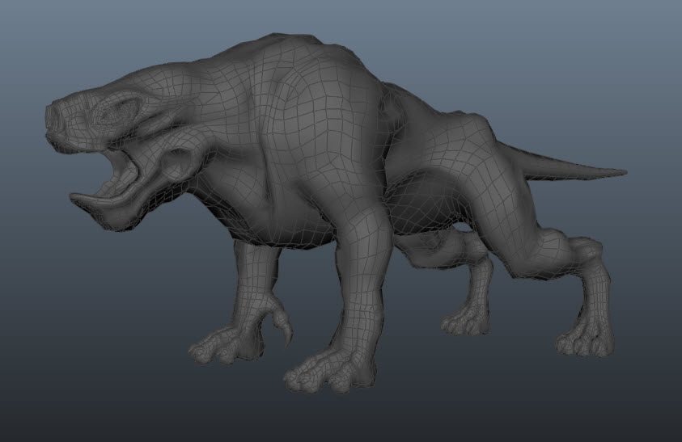
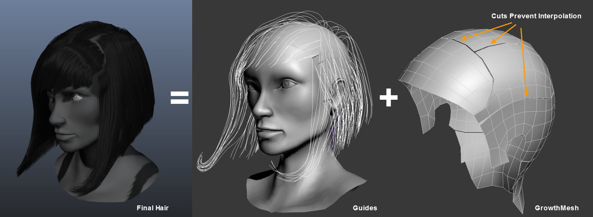
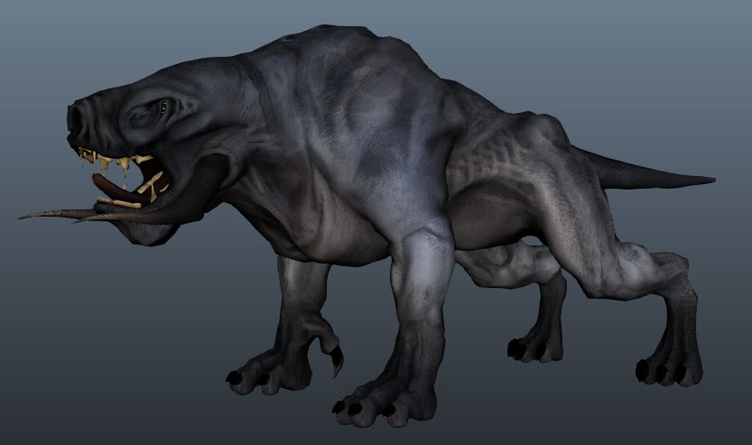
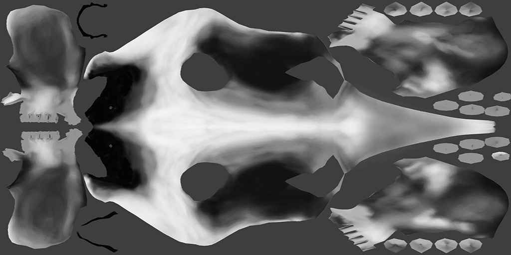
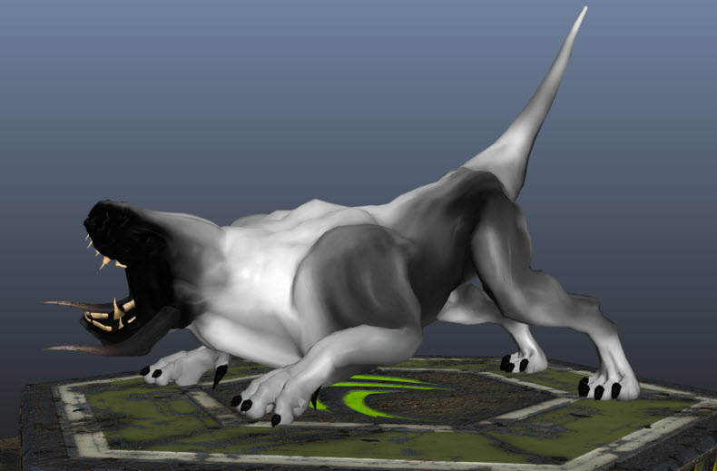
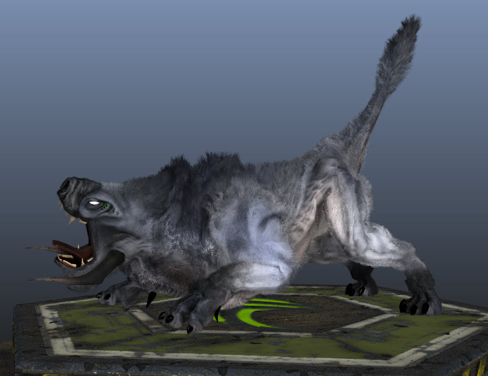

Ideal Character Mesh
GrowthMesh
A GrowthMesh is a copy of the graphics mesh that is used for strand generation and shadow mapping. There is no need to render the growth mesh in the game engine. It is only used as reference for HairWorks.
Currently The growth mesh can only have 1 material ID. Multiple materials on a single GrowthMesh are not supported at this time. If multiple textures are used on the graphics mesh, the UVs will have to be consolidated for use on the GrowthMesh.
A GrowthMesh must be one object, however it can be made up of multiple poly shells. Making seperate poly shells or adding splits in single shells is a good way to control how HairWorks interpolates strands between guide hairs.
Strand Interpolation
Hair strands are interpolated between the many guide hairs that make up a given hair asset. Sometimes there is a part in human hair, or places where you do not want the hair to interpolate. The way to control this is to cut a gap into the growth mesh. This prevents those guides from interpolating becvause there is no surface connecting them.
Groom
It should be noted that HairWorks can support many workflows so long as certain requirements are met.
A variety of grooming tools off the shelf or custom can therefore be used.
For more detailed information on the asset preparation, please see 3dsMax or Maya HairWorks documentation.
The following example workflow is for Maya and the 3rd party plugin Shave and a Haircut(www.joealter.com ), in addition to 3dsMax and the Hair and Fur modifier. These tools are very similar to one another.
For more detailed information on the Maya or 3dsMax HairWorks plugin, please see the plug documentation.
Grooming
Convert
Naming This isn’t a requirement but it’s good practice, especially if you have a busy scene file.
Add HairWorks On the growth mesh that represents your asset, add HairWorks from the main menu. Link the guide curve group node under the General rollout.
Export
Import
Textures can be used to control the the graphical look of the fur as well as physical behavior. Use textures based on the UVs of the growth mesh to use as control textures for the various attributes. Texture inputs can influence the fur per pixel in UV space or per vertex in UV space, depending on the control. In per pixel sampling, every interpolated hair will have proper texture samples from interpolated UVs. In per vertex sampling, values are sampled only at the guide hair (growth mesh vertex) location and interpolated. Color textures should be used color fields such as root and tip color. Black and white textures should be used for control of physical attributes such as density. A black and white texture is treated the same as in DCC tools; black = 0.0, white = 1.0, and acts as a multiplier against that attribute’s constant value.
For example, if a density map is provided then setting the Density constant to 1.0 will provide the exact value of the texture. If using a value of .5, then it essentially scales the density down by half.
The same control texture can be used to control multiple attributes.
Attributes that accept control textures are currently:
Examples
Density Map
 **Root Color **
Projects
The HairWorks Viewer allows an artist to save and load the entire scene with associated file references as a project file (.furproj). This makes the iteration process faster and more convenient. Numerous project files can reference the same set of external files.
It is best practice to organize external file references such as textures, hair files, and FBX files in the same directory as the fur project file. However, this is not necessary.
Fast Iterations
The HairWorks viewer operates as place for a wide range of team members to iterate HairWorks assets.
Once the initial groom and growth mesh has been created in 3dsMax or Maya and exported to a hair file and FBX, HairWorks takes over as the go-to iteration tool. This allows more team members than just the ones who have DCC seats to iterate on the assets. For example, a character artist could build the growth mesh, groom the hair, and then send the results to HairWorks where the VFX team can tune and iterate on the look and performance of the fur. All the attributes are editable in real time allowing for lighting fast iterations.
Using the import options allows artists to selectively import parts of different hair files helping to facilitate more non-destructive and therefore freely creative workflow.
After an asset has been tuned, it can be resaved as the same or new hair file and set to the game engine for use.
Team Reviews
HairWorks also operates as great team review tool. A review session with many team members can happen more frequently without the heavy weight of a game engine or the need to wait for integrations. Using HairWorks presentation mode removes all the UI elements so that the team can strictly focus on the asset to be reviewed. And because there can many combinations of project and hair files, teams can make better comparisons on the aesthetics of their assets, again without the weight and burden of a large engine.
{kind=link}
{kind=link}
{kind=link}
{kind=link}
{kind=link}
{kind=link}
{kind=link}